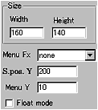
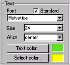
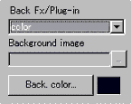

|
This applet provides a simple menu function with
4 choices of background effects, that is: simple colour, image,
blob animation or galaxy animation.
[For more technical
information about the available parameters, click here.]
Most parameters are self-explanatory and you can
always see brief description of each parameter by moving the mouse
pointer over the wizard.
 |
Before start editing the menu,
you should plan the structure of the menu for your site carefully.
Creating the site structure on Anfy wizard is simple. Add
and remove items with item names and associated URL and text.
Since the ver 1.4, the tree items can be named
with non-English fonts. To achieve this, you need to select
your desired character set at the "character set"
parameter box.
|
 |
In the example shown left, Japanese
(Shift-JIS) is selected. Then, appropriate code will be added
in the final document within a <meta> tag. |
We currently provide the following list of character
sets, but if you manually edit <meta> tag, you should be able
to use others too.
|
Arabic (ISO) iso-8859-6
Arabic (Windows) windows-1256
Baltic (ISO) iso-8859-4
Baltic (Windows) windows-1257
Chinese (Traditional) big5
Chinese (Simplified) gb2312
Chinese (Simplified HZ) hz-gb-2312
Cyrillic (ISO) iso-8859-5
Cyrillic (Windows) windows-1251
European (Central, ISO) iso-8859-2
European (Central, Windows) windows-1250
European (Western, ISO) <-- default iso-8859-1
Greek (ISO) iso-8859-7
Greek (Windows) windows-1253
Hebrew (ISO) iso-8859-8
Hebrew (Windows) windows-1255
Japanese (Shift-JIS) x-sjis
Japanese (JIS) iso-2022-jp
Japanese (EUC) x-euc-jp
Korean (ISO) iso-2022-kr
Korean (euc-kr) euc-kr
Latin 3 (ISO) iso-8859-3
Thai (ISO) iso-8859-11
Thai (Windows) windows-874
Turkish (ISO) iso-8859-9
Turkish (Windows) windows-1254
Ukrainian (KOI8-RU) koi8-ru
Vietnamese (Windows) windows-1258
|
Those who use non-English (non-Latin) fonts should
know how to handle non-Latin fonts in HTML. For example, you add
in the <head></head> tag,
<meta http-equiv="content-type"
content="text/html; charset=iso-8859-1">
if Latin fonts are used. However, in the case of
Latin fonts, most people tend to use default character set and may
not explicitly state this. The wizard automatically outputs this
tag for you!
 |
Optionally you can
specify a frame in which a link is opened. To do this, check
the "URL target frame box" and select the target
from "mode" menu. |
|
You can also add your original frame name
at "Target frame" after choosing "other
target" at "mode". Urls can be email
addresses or file names as usual.
One thing you have to make sure is that you
always add at least one "back" item to each
node. Without this users can't go to upper trees. After add
an item, check "back" box and you have got
one back item enabled, which is shown with a left arrow sign.
Whenever you make changes to the menu tree,
you need to click "Apply change" button,
unless you have checked "Auto apply" box.
|
 |
Next, decide the applet size. "Menu
Fx" decides if each menu text has diffusion effect.
With "random" for this value, menu texts
are blurred when a mouse pointer is over them.
If you would like the menu to appear in a
small new window, check "Float mode" box.
|
Then set menu start position and status
bar position, both of which designate length from the top of
the applet.
 |
Now decides the font, font size,
text alignment and normal text colour and selected
text colour.
By default, you select one font from Courier,
Helvetica, Dialog, Times Roman.
|
These are standard fonts and even if you want to
type in non-Latin letters, such as Japanese, Greek and Hebrew, these
four fonts can be used.
This is achieved by automatically, so you don't
really have to set non standard fonts in any circumstances, however,
by unchecking "standard" box, you are allowed to
select one from all the available system fonts.
Note.
Using non-standard font causes unexpected results
in other people's systems. When you do thits, you must be aware
of what you are doing.
 |
There are four choices of background
effects, which can be simple colour, image, galaxy, or blob
animation. If your choice is colour, specify it at "Back.
colour" palette. |
If your choice is "image", specify the background
image. The detail configurations for blob and galaxy will be discussed
next.
|